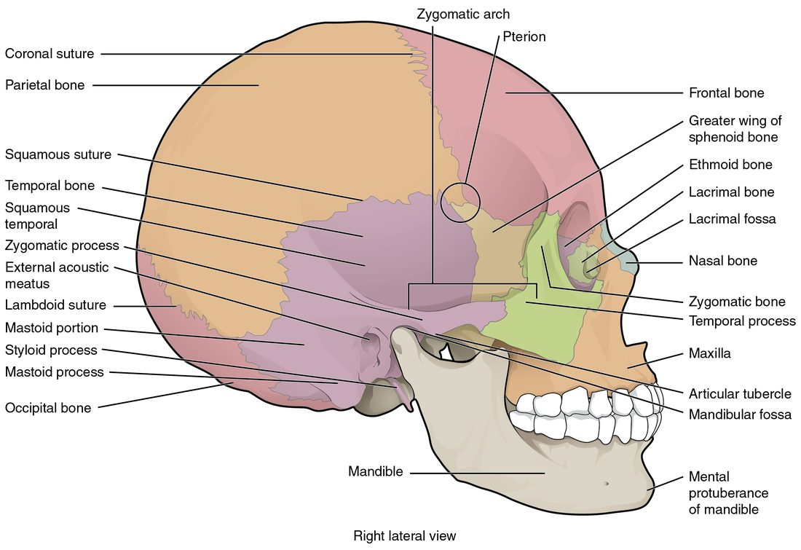

The axial skeleton and the skull
1Why this matters
Jordan, 17, is hit on the side of the head by a baseball, just above his cheek. He jokes with his coach for an hour, then gets a headache, starts vomiting and becomes hard to wake. A scan shows a thin crack at the spot where four skull bones meet, and blood collecting under it from a torn artery. Knowing the skull's bones, seams and weak spots is how you know that blow was dangerous.
2What this builds on
3Quick check before you start
1. Which bone marking is a rounded knob at the end of a bone, where it meets another bone?
- Fossa
- Condyle
- Crest
Show the answer
A condyle is a rounded knob where one bone meets another. A fossa is a shallow hollow, and a crest is a raised ridge.
- Fossa:
- Correct: Condyle:
- Crest:
2. How do the flat bones of the brain case form?
- By intramembranous ossification, directly inside a sheet of connective tissue
- By endochondral ossification, replacing a cartilage model
- By appositional growth on the surface of cartilage
Show the answer
The flat bones of the skull form by intramembranous ossification: bone is laid down directly inside a sheet of connective tissue, without a cartilage model. Endochondral ossification builds most other bones from cartilage.
- Correct: By intramembranous ossification, directly inside a sheet of connective tissue:
- By endochondral ossification, replacing a cartilage model:
- By appositional growth on the surface of cartilage:
3. Which body cavity holds the brain?
- The cranial cavity, part of the dorsal body cavity
- The thoracic cavity, part of the ventral body cavity
- The vertebral canal, part of the ventral body cavity
Show the answer
The brain sits in the cranial cavity, the upper part of the dorsal body cavity. The vertebral canal, also dorsal, holds the spinal cord, and the thoracic cavity is ventral.
- Correct: The cranial cavity, part of the dorsal body cavity:
- The thoracic cavity, part of the ventral body cavity:
- The vertebral canal, part of the ventral body cavity:
4Anatomy

With labels hidden, select a box to reveal its label.
5How it works, step by step
- The flat bones of the brain case form by intramembranous ossification, each spreading outward from an ossification center in a sheet of connective tissue.At birth the bones have not yet grown far enough to meet each other.
- Where several bones have not met, only a tough fibrous membrane covers the brain.These membrane-covered areas are the fontanelles, and narrow open seams run along every bone edge.
- Bones separated by membrane can slide and overlap.The head narrows as it passes through the birth canal, and afterward the skull can expand as the brain grows.
- The bone edges keep growing toward each other through infancy.The fontanelles shrink and close, the posterior one by about 2 to 3 months and the anterior one by about 1 to 2 years.
- The jagged bone edges end up interlocked, bound by a thin layer of dense connective tissue.The sutures hold the cranial bones almost motionless, so the adult brain case is a rigid box.
6Core concepts
7A common mistake
The wrong idea: A baby's soft spot is an open hole in the skull with nothing protecting the brain.
What actually happens: A fontanelle is not a hole. It is an area where the skull bones have not yet grown to meet, covered by a tough sheet of fibrous membrane, with the scalp over it. You can touch it gently and feel a pulse through it. It is less protected than bone, but it is closed, and it usually disappears by the second year as the bones meet.
8Check yourself
Anything you miss goes into your review queue.
1. Name the pinned area where four skull bones meet.
- Pterion
- Mastoid process
- Zygomatic arch
- Coronal suture
Show the answer
The pterion is the small H-shaped area on the side of the skull where the frontal, parietal, temporal and sphenoid bones meet. It is one of the thinnest parts of the skull.
- Correct: Pterion: Correct. This is the pterion, where four bones meet over a large artery.
- Mastoid process: The mastoid process is the knob of the temporal bone behind the ear, lower and farther back.
- Zygomatic arch: The zygomatic arch is the bony bar of the cheek below this area.
- Coronal suture: The coronal suture runs across the top of the head between the frontal and parietal bones; it is one of the seams that ends near here, not the meeting area itself.
2. Name the pinned opening.
- Jugular foramen
- Carotid canal
- Foramen lacerum
- Foramen magnum
Show the answer
The foramen magnum is the large hole in the occipital bone. The lower end of the brain passes through it and becomes the spinal cord.
- Jugular foramen: The jugular foramen is a smaller opening at the side, between the temporal and occipital bones.
- Carotid canal: The carotid canal is a small tunnel in the temporal bone that carries the main artery to the front of the brain.
- Foramen lacerum: The foramen lacerum is a ragged gap near the tip of the temporal bone's dense ridge, filled with cartilage in life.
- Correct: Foramen magnum: Correct. The great central hole in the occipital bone is the foramen magnum.
3. Name the pinned structure on this newborn skull.
- Posterior fontanelle
- Anterior fontanelle
- Sagittal suture
- Ossification center
Show the answer
The anterior fontanelle is the large diamond-shaped soft spot on top of the head where the frontal and parietal bones will meet. It usually closes between about 1 and 2 years of age.
- Posterior fontanelle: The posterior fontanelle is the small triangle at the back of the head, between the parietal and occipital bones.
- Correct: Anterior fontanelle: Correct. The large diamond at the front of the top of the head is the anterior fontanelle.
- Sagittal suture: The sagittal suture is the seam that runs along the midline between the two parietal bones, not the wide membrane-covered area.
- Ossification center: An ossification center is the point in the middle of each bone where bone first formed.
4. Which of these is a facial bone rather than a cranial bone?
- Sphenoid
- Ethmoid
- Vomer
- Occipital
Show the answer
The vomer is one of the 14 facial bones. It forms the lower part of the bony septum of the nose.
- Sphenoid: The sphenoid is a cranial bone that stretches across the middle of the skull base.
- Ethmoid: The ethmoid is a cranial bone, even though much of it sits behind the nose.
- Correct: Vomer: Correct. The vomer is a facial bone.
- Occipital: The occipital bone is the cranial bone at the back and base of the brain case.
5. A 17-year-old is hit on the side of the head, just above the middle of the cheek arch, by a baseball. He talks normally for an hour, then becomes drowsy and confused. A scan shows blood collecting inside the skull under the spot that was hit. Why is this spot so dangerous?
- The bone is thin there, and a large artery runs just inside it
- The foramen magnum lies directly beneath it
- The frontal sinus lies right under it and quickly fills with blood
- The sagittal suture lies directly under the spot
Show the answer
The blow landed on the pterion, where the frontal, parietal, temporal and sphenoid bones meet. The bone is thin there, and the artery that enters the skull through the foramen spinosum runs along its inner surface. A crack can tear the artery, and the blood that collects presses on the brain.
- Correct: The bone is thin there, and a large artery runs just inside it: Correct. The pterion is thin and overlies a large artery.
- The foramen magnum lies directly beneath it: The foramen magnum is in the base of the skull at the back, far from the side of the head.
- The frontal sinus lies right under it and quickly fills with blood: The frontal sinus is in the forehead above the eyebrows, not on the side of the head.
- The sagittal suture lies directly under the spot: The sagittal suture runs along the top midline of the head, far from the side where he was hit, so it is not under this spot.
6. A 9-month-old has had frequent watery stools for two days. As the nurse holds her upright, she feels a dip at the soft spot on the top of the head toward the front. Which soft spot is this, and what does the finding suggest?
- Posterior fontanelle; raised pressure inside the skull
- Anterior fontanelle; dehydration
- Anterior fontanelle; raised pressure inside the skull
- Posterior fontanelle; dehydration
Show the answer
The soft spot on top of the head toward the front is the anterior fontanelle, which stays open until about 1 to 2 years. When an infant loses body water, the volume inside the skull falls a little and the membrane sinks.
- Posterior fontanelle; raised pressure inside the skull: The posterior fontanelle is at the back of the head and usually closes by 2 to 3 months, and raised pressure makes a soft spot bulge, not sink.
- Correct: Anterior fontanelle; dehydration: Correct. A sunken anterior fontanelle suggests dehydration.
- Anterior fontanelle; raised pressure inside the skull: The location is right, but raised pressure inside the skull makes the fontanelle bulge and feel tense.
- Posterior fontanelle; dehydration: The posterior fontanelle is at the back of the head and is usually closed by 9 months.
7. Order these landmarks of the floor of the brain case from front to back.
- Crista galli
- Sella turcica
- Petrous ridge
- Foramen magnum
Show the answer
Moving back along the floor: the crista galli rises from the ethmoid in the anterior cranial fossa, the sella turcica of the sphenoid sits in the middle cranial fossa, the petrous ridge of each temporal bone marks the back edge of the middle fossa, and the foramen magnum opens in the posterior cranial fossa.
- Correct order: 1. Crista galli 2. Sella turcica 3. Petrous ridge 4. Foramen magnum
8. Which bone belongs to the appendicular skeleton?
- The hyoid bone
- A hip bone
- The mandible
- The breastbone
Show the answer
The appendicular skeleton is the limbs plus the bones that attach them to the trunk. The hip bones anchor the legs, so they are appendicular, even though they sit low on the trunk.
- The hyoid bone: The hyoid is part of the axial skeleton, in the midline of the neck.
- Correct: A hip bone: Correct. The hip bones attach the legs to the trunk.
- The mandible: The mandible is a facial bone, part of the skull and so of the axial skeleton.
- The breastbone: The breastbone is part of the rib cage, in the axial skeleton.
9Summary
The skeleton divides into the axial skeleton (skull, hyoid, ear bones, backbone and rib cage) and the appendicular skeleton (the limbs and the shoulder and hip bones that attach them). The skull has 8 cranial bones around the brain and 14 facial bones. The coronal, sagittal, lambdoid and squamous sutures lock the cranial bones together; the pterion is a thin spot over a large artery. The brain case floor steps down through the anterior, middle and posterior cranial fossae, and foramina such as the foramen magnum carry nerves and vessels. The frontal, maxillary, sphenoid and ethmoid sinuses are air spaces lined by mucous membrane. Fontanelles are membrane-covered gaps in a newborn's skull that close as the bones meet. The hyoid touches no other bone.